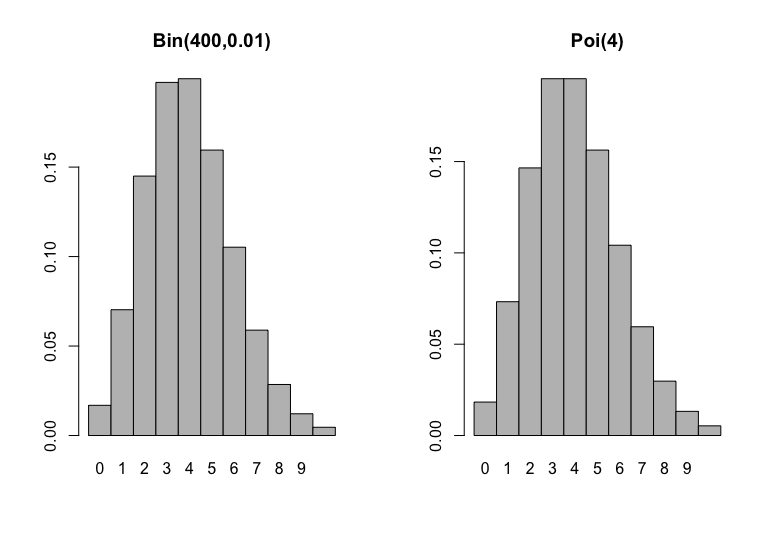

Capítulo 5 Modelos de distribuições discretas
Neste capítulo estudaremos vários modelos de distribuições de variáveis aleatórias discretas mais comuns. Ao longo do capítulo usaremos a notação \(X\sim\mathcal D\) para dizer que \(X\) “tem distribuição \(\mathcal D\)”, onde \(\mathcal D\) é uma certa distribuição de probabilidade.
5.1 Distribuição Uniforme Discreta
Definição 5.1 Dizemos que a v.a. \(X\) tem distribuição uniforme discreta sobre o conjunto \(\{x_1,\ldots,x_n\}\subset \mathbb R\) se tem função de probabilidade dada por \[ p(x_i) = \frac{1}{n}, \; i =1,2,\ldots,n. \] \(X\) é um elemento escolhido ao acaso no conjunto \(\{x_1,\ldots,x_n\}\).
Notação: \(X\sim\) Uniforme discreta\(\{x_1,\ldots,x_n\}\).
Exemplo 5.1 Seja \(X\): Número observado no lançamento de um dado honesto, temos que \[ p(i)=\frac{1}{6}, \; i=1,2,3,4,5,6. \]
Proposição 5.1 Seja \(X\sim\) Uniforme discreta\(\{1,\ldots,n\}\), então: \[\begin{align*} E(X) = \frac{n+1}{2} \text{ e } Var(X) = \frac{(n-1)(n+1)}{12} \end{align*}\]
Prova. \[\begin{align*} E(X) &= \frac{1}{n} \sum_{i=1}^n i = \frac{1}{n} \frac{n(n+1)}{2} = \frac{n+1}{2} \\ E(X^2) &= \frac{1}{n} \sum_{i=1}^n i^2 = \frac{1}{n} \frac{n(n+1)(2n+1)}{6} \\ Var(X) &= E(X^2) - [E(X)]^2 = \frac{(n-1)(n+1)}{12} \end{align*}\]
5.2 Distribuição de Bernoulli
Definição 5.2 (Ensaio de Bernoulli) Um ensaio de Bernoulli é um experimento com somente dois resultados possíveis: sucesso ou fracasso, de modo que a probabilidade de sucesso é igual a \(p\in[0,1]\).
Exemplo 5.2 Exemplos de ensaios de Bernoulli são:
- Lançamento de uma moeda: cara (sucesso) ou coroa (fracasso).
- Avaliação de um item: item bom (sucesso) ou item defeituoso (fracasso).
- Resposta de um munícipe sobre o favorecimento a um projeto de lei: sim (sucesso) ou não (fracasso).
Dado um evento \(A \subset \Omega\) com espaço amostral \(\Omega\) associado a um certo experimento aleatório, podemos definir um ensaio de Bernoulli, da seguinte maneira: dizemos que ocorre sucesso, se \(A\) ocorre, e dizemos que ocorre fracasso se, \(A^c\) ocorre. Por exemplo, considere o lançamento de um dado honesto e, defina \(A=\{6\}\): observar a face 6, logo \(A^c=\{1,2,3,4,5\}\). No exemplo, a probabilidade de sucesso é \(p=1/6\).
Considere um ensaio de Bernoulli, e defina a v.a. \(X \in \{0,1\}\) com distribuição de probabilidade: \[P(X=1)=p \text{ e } P(X=0)=1-p,\] de modo que \(\{X=1\}\) corresponde ao evento em que ocorreu sucesso e o evento \(\{X=0\}\) corresponde ao evento em que ocorreu fracasso. Dizemos que \(X\) é a da ocorrência de sucesso em um ensaio de Bernoulli. No exemplo do lançamento do dado, temos: \[ X(\omega)=\begin{cases} 1, & \omega \in A =\{6\}, \\ 0, & \omega \in A^c=\{1,2,3,4,5\} \end{cases} \]
Definição 5.3 A variável aleatória \(X\) definida como a indicadora da ocorrência de sucesso em um ensaio de Bernoulli tem uma distribuição de Bernoulli com parâmetro \(p\), cuja função de probabilidade de \(X\) é dada por: \[ p(x) = p^x (1-p)^{1-x}, \; x=0,1. \]
Notação: \(X \sim\) Bernoulli(\(p\)), onde \(p\) é chamado de parâmetro de sucesso.
Exemplo 5.3 A continuação apresentamos alguns exemplos de variáveis aleatórias com distribuição de Bernoulli:
Uma pessoa é selecionada ao acaso entre os moradores de uma cidade, e pergunta-se a ela se concorda com um projeto municipal. As respostas possíveis são SIM (sucesso) ou NÃO (fracasso). Defina: \[ X=\begin{cases} 1, & \text{se a pessoa responde SIM}, \\ 0, & \text{se a pessoa responde NÃO} \end{cases} \]
No lançamento de uma moeda. Defina: \[ X=\begin{cases} 1, & \text{se sair cara}, \\ 0, & \text{se sair coroa} \end{cases} \]
Na inspecção de um item de um lote. Defina: \[ X=\begin{cases} 1, & \text{se o item for defeituoso}, \\ 0, & \text{se o item não for defeituoso} \end{cases} \]
Proposição 5.2 Seja \(X\sim\) Bernoulli(\(p\)), temos que \[ E(X) = p \text{ e } Var(X) = p(1-p) \]
Prova. \[\begin{align*} E(X) &= \sum_{x=0}^1 x\, p^x (1-p)^{1-x} = p\\ E(X^2) &= \sum_{x=0}^1 x^2 \, p^x (1-p)^{1-x} = p \\ Var(X) &= E(X^2) - [E(X)]^2 = p-p^2= p(1-p) \end{align*}\]
5.3 Distribuição Binomial
A distribuição binomial, surge da realização sucessiva de \(n\geq 1\) ensaios independentes de Bernoulli. Por exemplo, considere o experimento de lançar uma moeda honestas 10 vezes esse experimento tem as seguintes características:
O experimento lançar uma moeda é um ensaio de Bernoulli.
O experimento é realizado 3 vezes.
Todos os 3 ensaios são idênticos e independentes.
A probabilidade \(p=1/2\) de obter uma cara, é constante em todos os ensaios.
Nesse experimento, definimos a variável aleatória, \(X\), definida como o número de caras obtidas nos 3 lançamentos.
Sob as condições do experimento podemos determinar a função de probabilidade de \(X\).
Podemos determinar que a função de probabilidade de \(X\) é:
\[ p(x) = \binom{3}{x}(1/2)^x(1/2)^{n-x}, \; x=0,1,2,3. \]
Explicação:
\(\binom{3}{x}\): corresponde ao número de maneiras de escolher 2 caras.
\((1/2)^{x}\): corresponde à probabilidade de observar \(x\) caras nos \(n\) lançamentos (multiplicamos as probabilidades pois os ensaios são independentes).
\((1/2)^{n-x}\): corresponde à probabilidade de observar \(n-x\) coroas nos \(n\) lançamentos (multiplicamos as probabilidades pois os ensaios são independentes).
Repare que se \(X\sim\) Binomial(\(n,p\)), então \(X= X_1 + \ldots + X_n\), onde \(X_1,\ldots,X_n \overset{iid}{\sim}\) Bernoulli(\(p\)). De modo que \(X_i = 1\) se o \(i\)-ésimo ensaio for sucesso ou \(X_i=0\) se o \(i\)-ésimo ensaio for fracasso.
Definição 5.4 Considere \(n\geq 1\) ensaios independentes de Bernoulli e seja \(p\) a probabilidade de sucesso em cada ensaio. Logo, a variável aleatória \(X\) definida como o número de sucessos nos \(n\) ensaios tem uma distribuição binomial de parâmetros \(n\) e \(p\), cuja função de probabilidade é dada por \[ p(x) = \binom{n}{x} p^x (1-p)^{n-x}, \, x=0,1,\ldots,n. \] Notação: \(X\sim\) Binomial(\(n,p\)).
Observação. Note que pelo Teorema Binomial \(p(x)\) é de fato uma função de probabilidade. Com efeito: \[ \sum_{x=0}^n \binom{n}{x} p^x (1-p)^{n-x} = (p+(1-p))^n = 1. \]
Proposição 5.3 Seja \(X\sim\)Binomial(\(n,p\)), temos que \[ E(X) = np \text{ e } Var(X) = np(1-p) \]
Prova. Usamos o fato que \(X=\sum_{i=1}^n X_i\), em que cada \(X_1, \ldots, X_n \sim\) Bernoulli(\(p\)) independentes. Logo \[\begin{align*} E(X) = \sum_{i=1}^n E(X_i) = np, \\ Var(X) = \sum_{i=1}^n Var(X_i) = np(1-p). \end{align*}\]
Exemplo 5.4 Suponha que 60% da população de uma cidade é a favor de um projeto proposto pelo prefeito. Seleciona-se uma amostra aleatória de 15 pessoas.
Qual a probabilidade de que a amostra contenha no máximo duas pessoas favoráveis ao projeto?
Quais são o valor esperado e variância do número de pessoas a favor do projeto na amostra?
Solução. Seja \(X\) o número de pessoas favoráveis ao projeto na amostra. Então, \(X\sim\) Binomial(15,0.6).
\(P(X\leq 2) = \binom{15}{0} (0.6)^0 (0.4)^{15} + \binom{15}{1} (0.6)^1 (0.4)^{14} + \binom{15}{0} (0.6)^2 (0.4)^{13}\)
\(E(X) = 15 \times 0.6 = 9\) e \(Var(X)= 15 \times 0.6 \times 0.4 =3.6\).
Proposição 5.4 Seja \(X\sim\) Binomial(\(n,p\)), então, à medida que \(x\) varia de 0 a \(n\), \(p(x)\) primeiro cresce e depois decresce, atingindo seu valor máximo quando \(x=\lfloor (n+1)p \rfloor\): maior inteiro menor ou igual que \((n+1)p\).
5.4 Distribuição Geométrica
Definição 5.5 Consideremos um ensaio de Bernoulli com probabilidade de sucesso \(p\) e realizações sucessivas e independentes desse experimento até que ocorra o primeiro sucesso. A variável aleatória definida como o número de ensaios necessários até o primeiro sucesso tem uma distribuição geométrica de parâmetro \(p\), cuja função de probabilidade é dada por \[ p(x) = (1-p)^{x-1}p, \; x=1,2,3,\ldots \] Notação: \(X\sim\) Geom(\(p\))
Observação. Pela série geométrica vemos que \(p(x)\) é de fato uma função de probabilidade. Com efeito: \[ \sum_{x=1}^\infty (1-p)^{x-1}p = p\sum_{x=0} (1-p)^x = p \times \frac{1}{1-(1-p)} =1. \]
Proposição 5.5 Seja \(X\sim\) Geom(\(p\)), temos que \[ E(X) = \frac{1}{p} \text{ e } Var(X) = \frac{1-p}{p^2} \]
Prova. Seja \(q=1-p\), logo \[\begin{align*} E(X) &= \sum_{x=1}^\infty x q^{x-1} p \\ &= \sum_{x=1}^\infty (x-1 + 1) q^{x-1} p \\ &= \sum_{x=1}^\infty (x-1) q^{x-1} p + \sum_{x=1}^\infty q^{x-1} p \\ &= q\sum_{y=0}^\infty y q^{y-1} p + 1 \\ &= q E(X) + 1. \end{align*}\] Daí, \((1-q) E(X)= 1 \Rightarrow E(X) = \frac{1}{p}\).
\[\begin{align*} E(X^2) &= \sum_{x=1}^\infty x^2 q^{x-1}p \\ &= \sum_{x=1}^\infty (x-1 + 1)^2 q^{x-1}p \\ &= \sum_{x=1}^\infty (x-1)^2 q^{x-1}p + 2 \sum_{x=1}^\infty (x-1) q^{x-1}p + \sum_{x=1}^\infty q^{x-1}p \\ &= q\sum_{y=0}^\infty y^2 q^{y-1} p + 2q \sum_{y=0}^\infty yq^{y-1}p + 1 \\ &=qE(X^2) + 2q E(X) + 1. \end{align*}\] Daí, \(pE(X^2) = \frac{2q}{p} +1 \Rightarrow E(X^2) = \frac{2q+p}{p^2} = \frac{q+1}{p^2}\). Portanto, \[ Var(X) = E(X^2) - [E(X)]^2= \frac{q+1}{p^2} - \frac{1}{p^2} = \frac{q}{p^2} = \frac{1-p}{p^2}. \]
Exemplo 5.5 Um dado honesto é lançado repetidamente, de modo independente, até que se obtenha a face 6. Determine:
a probabilidade de que sejam necessários exatamente 5 lançamentos.
a probabilidade de que sejam necessários pelo menos 4 lançamentos.
a esperança e variância do número de lançamentos feitos.
Solução. Seja \(X:\) Número de lançamentos feitos até obter a face 6. Então, \(X\sim\) Geométrica(\(p = 1/6\)).
\(P(X=5)= \left(\frac{1}{6}\right)\left(\frac{5}{6}\right)^4 = \frac{5^4}{6^5} \approx 0.0804\).
\(P(X\geq 4) = \sum_{x=4}^\infty \left(\frac{1}{6}\right)\left(\frac{5}{6}\right)^{x-1} = \left(\frac{5}{6}\right)^3 \approx 0.5787.\)
\(E(X)=\frac{1}{1/6} = 6\) e \(Var(X)=\frac{5/6}{(1/6)^2} = 30\).
5.5 Distribuição Binomial Negativa (Pascal)
Definição 5.6 Consideremos um ensaio de Bernoulli com probabilidade de sucesso \(p\) e realizações sucessivas e independentes desse experimento até que ocorra o \(r\)-ésimo sucesso. A variável aleatória definida como o número de ensaios necessários até o \(r\)-ésimo sucesso tem uma distribuição binomial negativa de parâmetros \(r\) e \(p\), cuja função de probabilidade é dada por \[ p(x) = \binom{x-1}{r-1} p^r(1-p)^{x-r}, \; x=r,r+1,\ldots \] Notação: \(X \sim\) BN(\(r,p\))
Observação. Seja \(y=x-r\), \(x=r,r+1\ldots\) , \[\begin{align*} \binom{x-1}{r-1} &= \binom{y+r-1}{r-1} \\ &=\frac{(y+r-1)\cdots r (r-1)!}{(r-1)! y!}\\ &=\frac{(y+r-1)\cdots r}{y!} \\ &=(-1)^y \frac{(-r)\cdots (-y-r+1)}{y!}\\ &=(-1)^y\binom{-r}{y} \end{align*}\] Daí, o nome de binomial negativa.
Da observação anterior se \(X\sim\) BN(\(r,p\)), então pode-se escrever a função de probabilidade de \(X\) como
\[ p(x) = (-1)^{x-r} \binom{-r}{x-r}p^rq^{x-r}, \; x=r,r+1,\ldots \] onde \(q=1-p\).
Observação. Da série binomial \[ (1+x)^\beta = \sum_{y=0}^\infty \binom{\beta}{y} x^y, \] temos que \[ p^{-r} = (1-q)^{-r} = \sum_{y=0}^\infty \binom{-r}{y} (-q)^y, \]
Agora, é facil mostrar que \(p(x)\) é de fato uma função de probabilidade \[\begin{align*} \sum_{x=r}^\infty (-1)^{x-r} \binom{-r}{x-r}p^rq^{x-r} &=\sum_{y=0}^\infty (-1)^y \binom{-r}{y}p^rq^y\\ &= \sum_{y=0}^\infty \binom{-r}{y} (-q)^y p^r = p^{-r} p^r = 1. \end{align*}\]
Observação. Repare que se \(X\sim\) BN(\(r,p\)), então \(X=\sum_{i=1}^r X_i\), tal que \(X_1,\ldots,X_r \overset{iid}{\sim}\) Geom(\(p\)). A interpretação é a seguinte: \(X_1\) representa o número de ensaios até o primeiro sucesso, \(X_2\) representa o número de ensaios necessários depois do primeiro sucesso para obter o segundo sucesso e assim por diante.
Proposição 5.6 Seja \(X\sim\) BN(\(r,p\)), temos que \[ E(X) = \frac{r}{p} \text{ e } Var(X) = \frac{r(1-p)}{p^2} \]
Prova. \(X=\sum_{i=1}^r X_i\), tal que \(X_1,\ldots,X_r\overset{iid}{\sim}\) Geom(\(p\)), logo \[\begin{align*} E(X) &= \sum_{i=1}^r E(X_i) = \frac{r}{p}, \\ Var(X) &= \sum_{i=1}^r Var(X_i) = \frac{r(1-p)}{p^2}. \end{align*}\]
Exemplo 5.6 Um dado honesto é lançado repetidamente, de modo independente, até que a face 6 seja obtida 4 vezes. Qual a probabilidade de que sejam necessários exatamente 10 lançamentos?
Solução. \(X:\) Número de lançamentos necessários até que a face 6 seja obtida 4 vezes. Então \(X\sim\) Binomial Negativa(\(r=4,p=1/6\)). Logo \[ P(X=10) = p(10) = \binom{10-1}{4-1} (1/6)^4(5/6)^{6} = \binom{9}{3} (1/6)^4(5/6)^{6} \approx 0,0217. \]
5.6 Distribuição Hipergeométrica
Definição 5.7 Considere uma urna com \(N\) bolas das quais \(R\leq N\) são vermelhas e \(N-R\) são pretas. Suponha que selecionamos uma amostra de tamanho \(n\leq N\) sem reposição. A variável aleatória definida como o número de bolas vermelhas selecionadas na amostra tem uma distribuição hipergeométrica de parâmetros \(n\), \(R\) e \(N\) cuja função de probabilidade é dada por
\[ p(x) = \frac{\binom{R}{x} \binom{N-R}{n-x}}{\binom{N}{n}}, \; x=0,1,\ldots n. \] Notação: \(X\sim\) Hipergeométrica(\(n,R,N\)).
Observação. Embora tenhamos definido \(p(x)\) para qualquer \(x\) entre 0 e \(n\) simplesmente por mera conveniência, o verdadeiro suporte da distribuição são os valores de \(x\) inteiros tais que \(\textrm{máx}(0,n-(N-R))\leq x \leq \textrm{mín}(n,R).\)
Exemplo 5.7 Um aluno estuda 12 exercícios, dos quais o professor vai escolher 6 aleatoriamente para uma prova. O estudante sabe resolver 9 dos 12 problemas. Seja \(X\) o número de exercícios resolvidos por ele na prova.
Qual a distribuição de \(X\)?
Calcule a probabilidade de que o aluno resolva ao menos 5 exercícios da prova.
Solução. Seja X: Número de exercícios resolvidos pelo estudante na prova.
\(X\sim\) Hipergeométrica(6,9,12).
\(P(X\geq 5) = p(5) + p(6) = 1/2.\)
Proposição 5.7 Seja \(X\sim\) Hipergeométrica(\(n,R,N\)) e seja \(p=\frac{R}{N}\), então \[ E(X)=np \text{ e } Var(X) = \left(\frac{N-n}{N-1}\right) np(1-p) \]
Prova. Seja \(p=\frac{R}{N}\), \[\begin{align*} E(X) &= \sum_{x=1}^n x \frac{\binom{R}{x} \binom{N-R}{n-x}}{\binom{N}{n}} \end{align*}\]
Usando as identidades
\[\begin{align*} x\binom{R}{x} = R \binom{R-1}{x-1} \text{ e } n\binom{N}{n} = N \binom{N-1}{n-1} \end{align*}\]
obtemos
\[\begin{align*} E(X) &=\frac{nR}{N} \sum_{x=1}^n \end{align*}\]
5.7 Distribuição de Poisson
Definição 5.8 Uma variável aleatória tem distribuição de Poisson de parâmetro \(\lambda >0\) se sua função de probabilidade é \[ p(x) = \frac{e^{-\lambda} \lambda^x}{x!}, \; x=0,1,2, \ldots \] Notação: \(X\sim\) Poisson(\(\lambda\))
Exemplo 5.8 Alguns exemplos de variáveis que podem ser modeladas por uma distribuição de Poisson são:
O número de erros de impressão em uma página.
O número de clientes que chegam em uma agência bancária.
O número de gols na copa do mundo.
O número de partículas \(\alpha\) emitidas por um material radioativo em um período de tempo determinado.
Observação. Geralmente a distribuição de Poisson é usada para modelar uma contagem de indivíduos que se distribuem aleatoriamente no tempo ou no espaço.
Proposição 5.8 Seja \(X\sim\) Poisson(\(\lambda\)), temos que \[ E(X) = \lambda \text{ e } Var(X)=\lambda \]
Prova. \[\begin{align*} E(X) &=\sum_{x=0}^\infty x \frac{e^{-\lambda} \lambda^x}{x!} \\ &=\sum_{x=1}^\infty \frac{e^{-\lambda} \lambda^x}{(x-1)!}\\ &= \lambda \sum_{x=1}^\infty \frac{e^{-\lambda} \lambda^{x-1}}{(x-1)!}\\ &= \lambda \sum_{y=0}^\infty \frac{e^{-\lambda} \lambda^y}{y!}\\ &=\lambda. \end{align*}\]
\[\begin{align*} E(X^2) &=\sum_{x=0}^\infty x^2 \frac{e^{-\lambda} \lambda^x}{x!} \\ &=\lambda \sum_{x=1}^\infty x \frac{e^{-\lambda} \lambda^{x-1}}{(x-1)!} \\ &= \lambda \sum_{y=0}^\infty (y+1) \frac{e^{-\lambda} \lambda^y}{y!}\\ &= \lambda \left[\sum_{y=0}^\infty y \frac{e^{-\lambda} \lambda^y}{y!} + \sum_{y=0}^\infty \frac{e^{-\lambda} \lambda^y}{y!} \right]\\ &=\lambda(\lambda + 1). \end{align*}\]
Portanto, \(Var(X) = \lambda(\lambda + 1) - \lambda^2 = \lambda\).
Exemplo 5.9 Suponha que o número de erros tipográficos em uma única página deste livro tenha uma distribuição de Poisson com \(\lambda = 1/2\). Calcule a probabilidade de que exista pelo menos um erro nesta página.
Solução. Seja \(X\): Número de erros nesta página, logo \[ P(X\geq 1) = 1- P(X\leq 0) = 1-e^{-1/2} \approx 0,393. \]
Exemplo 5.10 O número de partículas que uma fonte radioativa emite por minuto é uma variável aleatória com distribuição de Poisson com média igual a 5. Qual a probabilidade de que pelo menos três partículas sejam emitidas em um minuto.
Solução. \[ P(X\geq 3) = 1-e^{-5}-5e^{-5} -\frac{5^2e^{-5}}{2!} = 1-\frac{37}{2}e^{-5} \approx 0,8753. \]
5.8 Aproximação de Poisson à Binomial
Seja \(X\sim\) Binomial(\(n,p\)), com \(n\) grande e \(p\) pequeno, de modo que o valor \(\lambda = np\) é moderado. E seja \(Y\sim\) Poisson(\(\lambda=np\)), então para qualquer inteiro \(x\) entre 0 e \(n\),
\[ P(X=x) \approx P(Y=x) = \frac{e^{-np} (np)^x}{x!} \]
Essa aproximação decorre do Teorema de Poisson [Zu vergleichen Poisson, Recherches sur la probablité des jugements, Paris 1837. no 81, p. 205–207]. A idea é como segue:
\[\begin{align*} \binom{n}{x}p^x(1-p)^{n-x} &= \frac{n!}{(n-x)!x!} \left(\frac{\lambda}{n}\right)^{x} \left( 1- \frac{\lambda}{n}\right)^{n-x} \\ &=\frac{n!}{(n-x)!}\left(\frac{\lambda^x}{x!}\right) \left( 1- \frac{\lambda}{n}\right)^{n} \left(1- \frac{\lambda}{n}\right)^{-x}\\ &= \frac{\lambda^x}{x!} \times (1)(1-1/n)\cdots(1-(x+1)/n) \times \left( 1- \frac{\lambda}{n}\right)^{n} \times \left(1- \frac{\lambda}{n}\right)^{-x} \end{align*}\] Finalmente, quando \(n\to \infty\), temos que \(\binom{n}{x}p^x(1-p)^{n-x} \to e^{-\lambda}\frac{\lambda^x}{x!}\). Esse resultado também é conhecido como a Lei dos pequenos números.
Observação. Como regras práticas temos: \(n\geq 20\) e \(p\leq 0,05\) ou \(n\geq 100\) e \(np \leq 10\) Uma outra regra conhecida é: \(n>50\) e \(np<5\).
A tabela a continuação mostra diferentes valores de uma distribuição de Poisson com \(\lambda = 4\) e três distribuições binomiais, tais que \(np=4\).
Tabela: Comparação da Distribuição Binomial com a Poisson
| x | Bin(40,0.1) | Bin(100,0.04) | Bin(400,0.01) | Poi(4) |
|---|---|---|---|---|
| 0 | 0.0147809 | 0.0168703 | 0.0168703 | 0.0183156 |
| 1 | 0.0656928 | 0.0702930 | 0.0702930 | 0.0732626 |
| 2 | 0.1423344 | 0.1449793 | 0.1449793 | 0.1465251 |
| 3 | 0.2003225 | 0.1973329 | 0.1973329 | 0.1953668 |
| 4 | 0.2058870 | 0.1993885 | 0.1993885 | 0.1953668 |
| 5 | 0.1647096 | 0.1595108 | 0.1595108 | 0.1562935 |
| 6 | 0.1067562 | 0.1052328 | 0.1052328 | 0.1041956 |
| 7 | 0.0576145 | 0.0588803 | 0.0588803 | 0.0595404 |
| 8 | 0.0264066 | 0.0285201 | 0.0285201 | 0.0297702 |
| 9 | 0.0104323 | 0.0121475 | 0.0121475 | 0.0132312 |
| 10 | 0.0035933 | 0.0046059 | 0.0046059 | 0.0052925 |
Na Figura abaixo, mostramos o histograma de probabilidades de uma distribuição binomial com parâmetros \(n=400\) e \(p=0.01\) juntamente com o histograma de probabilidades de uma Poisson com média \(\lambda = 4\). Repare na semelhança dos gráficos.
Também, veja a Figura abaixo para uma outra ilustração dessa aproximação. 
Exemplo 5.11 Seja \(X\sim\) Binomial(100,0.065) \[ P(X=10) = \binom{100}{10} (0.065)^{10}(0.935)^{90} \approx 0.05502 \]
Pela aproximação de Poisson à Binomial, usamos \(Y\sim\) Poisson(\(100\times 0.065 = 6.5\)), logo
\[ P(X=10) \approx P(Y=10) = \frac{e^{-6.5} (6.5)^{10}}{10!} \approx 0.05578 \]